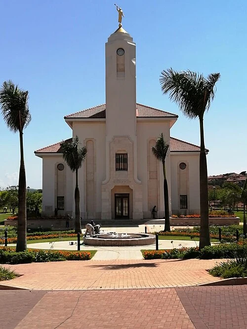
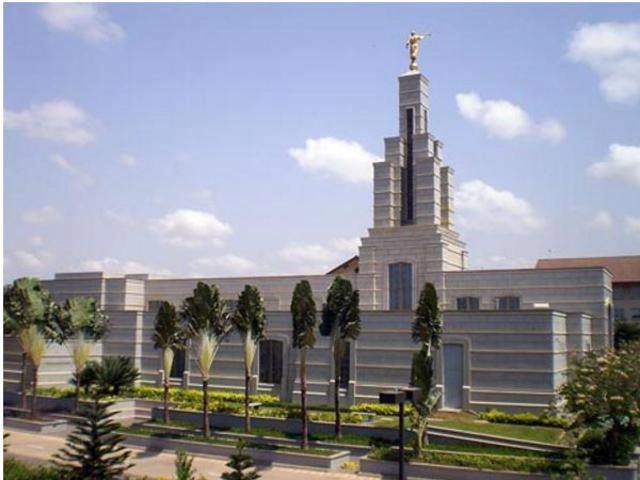
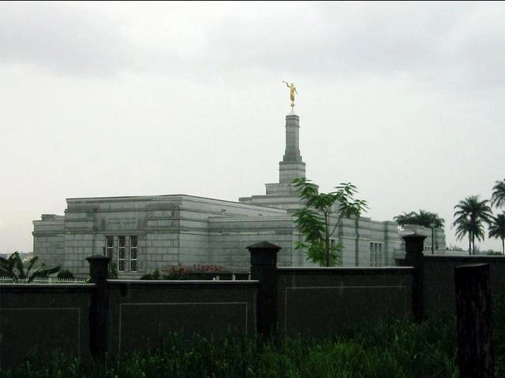

Temple Album
Home
Old
New
Large
Small
Famous Temples in Africa
DR Congo Temple

Durban,South Africa Temple

Ghana Temple

Nigeria Temple
Johannesburg, South Africa Temple
Ghana Temple
DR Congo Temple
Durban, South Africa Temple
Nigeria Temple